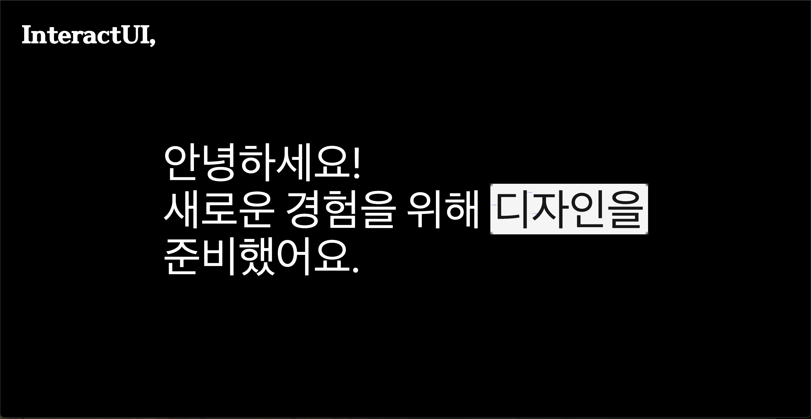
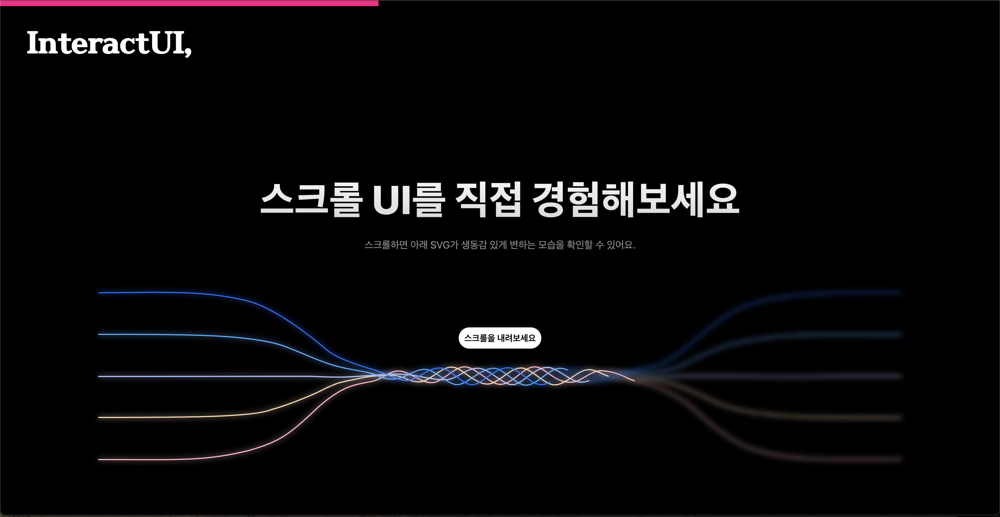
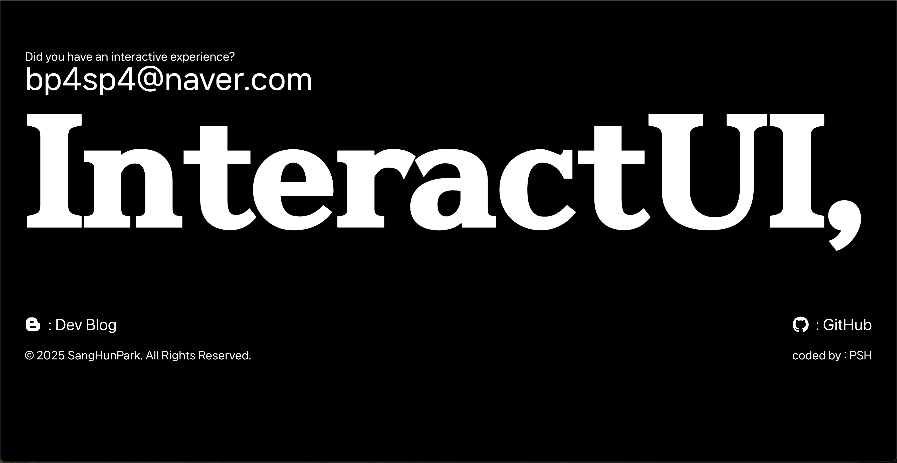

InteractUI,
InteractUI - 더 나은 인터랙션을 위한 디자인※ 사진을 누르시면 확대되어 보실수 있습니다.
  OverView.
InteractUI는 사용자 경험을 극대화하는 인터랙티브한 홈페이지 입니다. 최신 기술과 트렌드를 반영하여 직관적이고 감각적인 웹 인터페이스를 구축하는 데 집중하고 있으며, 반응형 디자인과 동적인 인터랙션을 통해 사용자와 웹 간의 자연스러운 상호작용을 제공합니다. Framer Motion, Tailwind CSS, React.js와 같은 최신 기술을 활용하여 부드러운 애니메이션과 최적화된 사용자 경험을 구현합니다. 단순한 시각적 요소를 넘어, 실용적이면서도 창의적인 UI를 설계하여 사용자들에게 더욱 몰입감 있는 경험을 선사합니다.
Project Results.
이번 프로젝트를 통해 Tailwind CSS에 대한 이해도가 더욱 깊어졌으며, 효율적인 스타일링과 컴포넌트 기반 디자인의 중요성을 체감할 수 있었습니다. 또한, Aceternity UI와 Magic UI 같은 UI 라이브러리를 활용하여 다양한 컴포넌트를 임포트하고 적용하는 방법을 익히면서, 기존보다 더 직관적으로 디자인 요소를 조합할 수 있게 되었습니다. Next.js를 활용하면서 서버 사이드 렌더링(SSR)과 정적 사이트 생성(SSG)에 대한 이해도가 향상되었고, 최신 트렌드를 반영한 홈페이지 개발 기술을 적용해 볼 수 있었습니다. 특히, Vercel을 이용한 배포 과정을 경험하면서 빠르고 간편하게 프로젝트를 배포하는 방법을 익혔고, 이러한 도구들이 웹사이트 제작을 훨씬 편리하게 만들어준다는 점을 실감할 수 있었습니다.
Work Info.
- 제작 기간25.03.04 ~ 25.03.12
- 작업 환경MAC OS
- 사용 툴VSCODE
- 사용 언어Next.js, TypeScript, HTML5, CSS3
- 주요 기능인터렉티브한 기능들
- 깃허브https://github.com/bp4sp4/notinghomepage